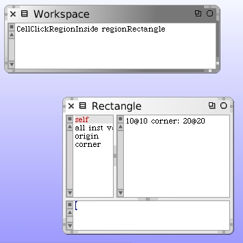
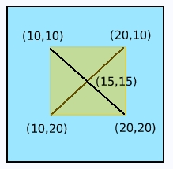
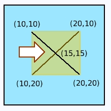
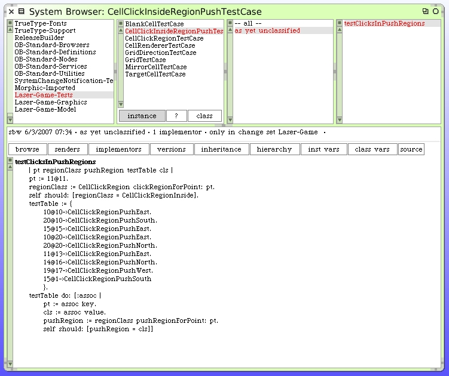

Determine Push Regions
We will begin with writing a new unit test to validate push direction selection within the inside click-region. If you open up a workspace and inspect the results of sending the #regionRectangle message to our CellClickRegionInside class you can see its current dimensions.
Within our cell, the subdivided inside-click-region looks like this (with the current sized coordinates shown).
Note that when we describe graphics operations in Squeak the coordinate system has increasing values of "x" as you move to the right and increasing values of "y" as you travel downwards on the screen.
When the user hovers the mouse over the subdivided click region shown the "push east" arrow should appear.
We can now describe several points of interest for testing.

|
|
We make some arbitrary decision about push intent when the dots were on the exact corners and on the lines. Here is the new unit test case. We don't expect this to work yet since we haven't written any push detection code.
The new test case class is CellClickInsideRegionPushTestCase.
